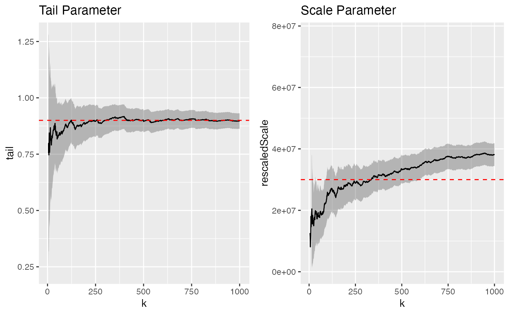

Mittag-Leffler estimates for varying thresholds
MLestimates.RdFor a range of thresholds, return the parameters of the Mittag-Leffler distribution fitted to the threshold exceedance times.
MLestimates(ctre, plot_me = TRUE, tail = NULL, scale = NULL, ks = 5:length(ctre))
Arguments
| ctre | A |
|---|---|
| plot_me | Should the estimates be plotted? |
| tail | Tail parameter of the Mittag-Leffler distribution, if known. Appears as a dashed line in the plot of the tail parameter estimates, and transforms the scale parameter estimates. If not known, scale parameter estimates are untransformed (tail is set to 1). |
| scale | Scale parameter of the Mittag-Leffler distribution, if known. Appears as a dashed line in the plot of scale parameter estimates. |
| ks | The values of k at for which estimates are computed. If e.g. k=10, then the threshold is set at the 10th order statistic (10th largest magnitude), and Mittag-Leffler parameter estimates are coputed for the threshold exceedance times. By default, all order statistics are used except the 5 largest, and the estimates are returned in a data frame. |
Value
A data.frame of Mittag-Leffler parameter estimates,
one row for each threshold, which is returned invisibly
unless plot_me = FALSE.
Details
If plot_me = TRUE, the estimates are returned invisibly.
Examples
library(magrittr) par(mfrow = c(1,2)) flares %>% ctre() %>% thin(k=1000) %>% MLestimates(tail = 0.9, scale = 3E7)#>#>#>#> 'data.frame': 496 obs. of 7 variables: #> $ k : num 5 6 7 8 9 10 11 12 13 14 ... #> $ tail : num 0.971 0.833 0.759 0.811 0.861 ... #> $ scale : num 39.1 70.2 117.5 132.4 140.4 ... #> $ tailLo : num 0.445 0.348 0.328 0.403 0.476 ... #> $ tailHi : num 1.5 1.32 1.19 1.22 1.25 ... #> $ scaleLo: num -12.9 -38 -72 -47.3 -22.3 ... #> $ scaleHi: num 91.2 178.5 306.9 312.2 303.2 ...